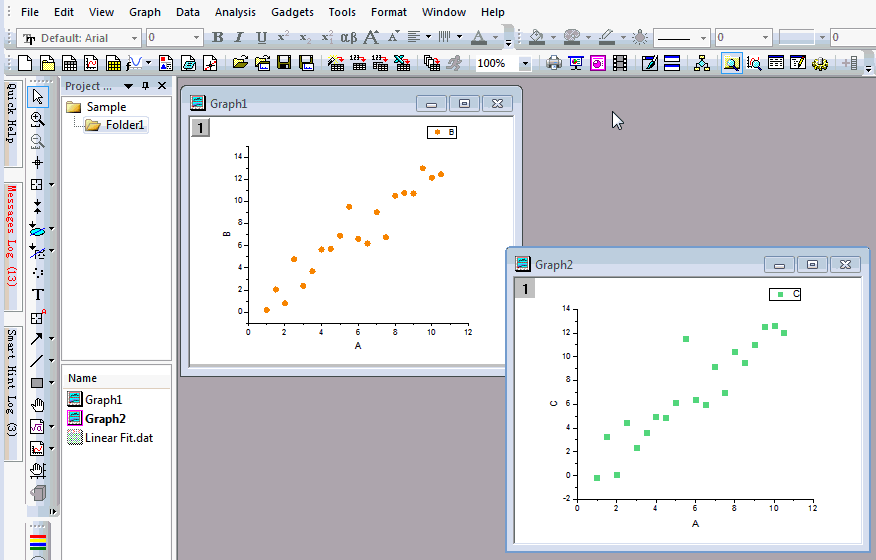

FAQ-137 作成したすべてのグラフにロゴを追加するには、どのようにしたらよいでしょうか？
最終更新日:2018/3/19
add-master-obj
すべてのグラフに、同じスタイルのロゴを同じ位置に追加する場合、マスター項目を使用することができます。
マスター項目を使うには、
- メニューのファイル: 新規作成: マスターページを選択してプロジェクトにマスターページを新しく作成します。
- ルートフォルダにマスターページを追加すると、マスターページと同じ寸法のグラフに、マスター項目が表示されます。
そうでない場合、マスターページを作成または更新した後にグラフをリフレッシュする必要があります。 - マスターページを編集すると、グラフ内の項目が自動で更新されます。
- マスターテンプレートを保存ボタンをクリックしてテンプレートを保存できます。次回、ファイル: 新規作成: マスターページを選択すると、この保存されたテンプレートがロードされます。

Note:
- Origin 2018bで作成されたグラフでは、表示: 表示様式: マスター項目の画面表示にデフォルトでチェックがついています。また、作図の詳細ダイアログのページレベルにある表示指定タブにあるマスター項目を使うにもチェックがついています。マスター項目がグラフ上に表示されない場合、これら2つの設定を確認してください。
- マスター項目は、テンプレートと同じ寸法のグラフページでのみ表示されます。
- マスターテンプレートを保存ボタンの下に表示されるコメントは「非表示」で、グラフウィンドウには適用されません。
- マスターページはプロジェクトには保存されるべきです。そうでない場合、プロジェクトをもう一度開くと、ロゴは表示されなくなります。
キーワード: マスターページ, マスター項目, グラフオブジェクト, 縦向き, 横向き, ロゴ, 画像
必要なOriginのバージョン: Origin 2018b以降